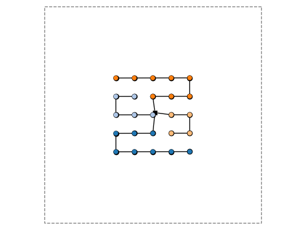

03: Simplified Floating#
In this example, we run Ard on a simplified floating platform problem.
We follow Example 02 closely, so descriptions are more sparse.
from pathlib import Path # optional, for nice path specifications
import pprint as pp # optional, for nice printing
import numpy as np # numerics library
import matplotlib.pyplot as plt # plotting capabilities
import windIO
import ard # technically we only really need this
from ard.utils.io import load_yaml # we grab a yaml loader here
from ard.api import set_up_ard_model # the secret sauce
from ard.viz.layout import plot_layout # a plotting tool!
import openmdao.api as om # for N2 diagrams from the OpenMDAO backend
# import optiwindnet.plotting
%matplotlib inline
# load input
path_inputs = Path.cwd().absolute() / "inputs"
input_dict = load_yaml(path_inputs / "ard_system.yaml")
# set up system
prob = set_up_ard_model(input_dict=input_dict, root_data_path=path_inputs)
Adding top_level
Adding layout2aep
Adding layout to layout2aep
Adding aepFLORIS to layout2aep
Activating approximate totals on layout2aep
Adding landuse
Adding collection
Adding mooring_design
Adding mooring_constraint
Adding spacing_constraint
Adding tcc
Adding orbit
Adding opex
Adding financese
Some new components are added to the Ard model here, comparing to Example 02:
mooring_design: designs the mooring system, here simply by doing straight-line mooring lines to the constant-valued seafloormooring_constraint: a module to compute a constraint function to make sure the moorings don't violate regulatory requirements on proximity
# visualize model
if False:
om.n2(prob)
# run the model
prob.run_model()
# collapse the test result data
test_data = {
"AEP_val": float(prob.get_val("AEP_farm", units="GW*h")[0]),
"CapEx_val": float(prob.get_val("tcc.tcc", units="MUSD")[0]),
"BOS_val": float(prob.get_val("orbit.total_capex", units="MUSD")[0]),
"OpEx_val": float(prob.get_val("opex.opex", units="MUSD/yr")[0]),
"LCOE_val": float(prob.get_val("financese.lcoe", units="USD/MW/h")[0]),
"area_tight": float(prob.get_val("landuse.area_tight", units="km**2")[0]),
"coll_length": float(prob.get_val("collection.total_length_cables", units="km")[0]),
"mooring_spacing": float(
np.min(prob.get_val("mooring_constraint.mooring_spacing", units="km"))
),
"turbine_spacing": float(
np.min(prob.get_val("spacing_constraint.turbine_spacing", units="km"))
),
}
print("\n\nRESULTS:\n")
pp.pprint(test_data)
print("\n\n")
RuntimeWarning: /opt/hostedtoolcache/Python/3.11.13/x64/lib/python3.11/site-packages/floris/core/wake_deflection/gauss.py:328
invalid value encountered in divideRuntimeWarning: /opt/hostedtoolcache/Python/3.11.13/x64/lib/python3.11/site-packages/floris/core/wake_deflection/gauss.py:163
invalid value encountered in divideRuntimeWarning: /opt/hostedtoolcache/Python/3.11.13/x64/lib/python3.11/site-packages/floris/core/wake_velocity/gauss.py:80
invalid value encountered in divide
ORBIT library intialized at '/opt/hostedtoolcache/Python/3.11.13/x64/lib/python3.11/site-packages/library'
RESULTS:
{'AEP_val': 409.5573528371712,
'BOS_val': 992.9941014540512,
'CapEx_val': 118.75948972475001,
'LCOE_val': 226.41888540401234,
'OpEx_val': 9.350000000000001,
'area_tight': 13.2496,
'coll_length': 21.89865877023397,
'mooring_spacing': 0.042875983926893214,
'turbine_spacing': 0.91}
optimize = True # set to False to skip optimization
if optimize:
# run the optimization
prob.run_driver()
prob.cleanup()
prob.check_totals(compact_print=True, show_only_incorrect=True)
# collapse the test result data
test_data = {
"spacing_primary": float(prob.get_val("spacing_primary")[0]),
"spacing_secondary": float(prob.get_val("spacing_secondary")[0]),
"angle_orientation": float(prob.get_val("angle_orientation")[0]),
"angle_skew": float(prob.get_val("angle_skew")[0]),
"AEP_val": float(prob.get_val("AEP_farm", units="GW*h")[0]),
"CapEx_val": float(prob.get_val("tcc.tcc", units="MUSD")[0]),
"BOS_val": float(prob.get_val("orbit.total_capex", units="MUSD")[0]),
"OpEx_val": float(prob.get_val("opex.opex", units="MUSD/yr")[0]),
"LCOE_val": float(prob.get_val("financese.lcoe", units="USD/MW/h")[0]),
"area_tight": float(prob.get_val("landuse.area_tight", units="km**2")[0]),
"coll_length": float(
prob.get_val("collection.total_length_cables", units="km")[0]
),
"mooring_spacing": float(
np.min(prob.get_val("mooring_constraint.mooring_spacing", units="km"))
),
"turbine_spacing": float(
np.min(prob.get_val("spacing_constraint.turbine_spacing", units="km"))
),
}
# clean up the recorder
prob.cleanup()
# print the results
print("\n\nRESULTS (opt):\n")
pp.pprint(test_data)
print("\n\n")
# plot convergence
## read cases
cr = om.CaseReader(
prob.get_outputs_dir() / input_dict["analysis_options"]["recorder"]["filepath"]
)
# Extract the driver cases
cases = cr.get_cases("driver")
# Initialize lists to store iteration data
iterations = []
objective_values = []
# Loop through the cases and extract iteration number and objective value
for i, case in enumerate(cases):
iterations.append(i)
objective_values.append(
case.get_objectives()[input_dict["analysis_options"]["objective"]["name"]]
)
# Plot the convergence
plt.figure(figsize=(8, 6))
plt.plot(iterations, objective_values, marker="o", label="Objective (LCOE)")
plt.xlabel("Iteration")
plt.ylabel("Objective Value (Total Cable Length (m))")
plt.title("Convergence Plot")
plt.legend()
plt.grid()
plt.show()
Driver debug print for iter coord: rank0:ScipyOptimize_SLSQP|0
--------------------------------------------------------------
Design Vars
{'angle_orientation': array([0.]),
'angle_skew': array([0.]),
'spacing_primary': array([7.]),
'spacing_secondary': array([7.])}
RuntimeWarning: /opt/hostedtoolcache/Python/3.11.13/x64/lib/python3.11/site-packages/floris/core/wake_deflection/gauss.py:328
invalid value encountered in divideRuntimeWarning: /opt/hostedtoolcache/Python/3.11.13/x64/lib/python3.11/site-packages/floris/core/wake_deflection/gauss.py:163
invalid value encountered in divideRuntimeWarning: /opt/hostedtoolcache/Python/3.11.13/x64/lib/python3.11/site-packages/floris/core/wake_velocity/gauss.py:80
invalid value encountered in divide
Objectives
{'collection.total_length_cables': array([21898.65877023])}
Driver debug print for iter coord: rank0:ScipyOptimize_SLSQP|1
--------------------------------------------------------------
Design Vars
{'angle_orientation': array([0.]),
'angle_skew': array([0.]),
'spacing_primary': array([7.]),
'spacing_secondary': array([7.])}
RuntimeWarning: /opt/hostedtoolcache/Python/3.11.13/x64/lib/python3.11/site-packages/floris/core/wake_deflection/gauss.py:328
invalid value encountered in divideRuntimeWarning: /opt/hostedtoolcache/Python/3.11.13/x64/lib/python3.11/site-packages/floris/core/wake_deflection/gauss.py:163
invalid value encountered in divideRuntimeWarning: /opt/hostedtoolcache/Python/3.11.13/x64/lib/python3.11/site-packages/floris/core/wake_velocity/gauss.py:80
invalid value encountered in divide
Objectives
{'collection.total_length_cables': array([21898.65877023])}
Driver debug print for iter coord: rank0:ScipyOptimize_SLSQP|2
--------------------------------------------------------------
Design Vars
{'angle_orientation': array([-0.00152482]),
'angle_skew': array([-0.00212941]),
'spacing_primary': array([6.98214515]),
'spacing_secondary': array([6.97888724])}
Objectives
{'collection.total_length_cables': array([21837.48886431])}
Driver debug print for iter coord: rank0:ScipyOptimize_SLSQP|3
--------------------------------------------------------------
Design Vars
{'angle_orientation': array([-0.0134454]),
'angle_skew': array([-0.01591441]),
'spacing_primary': array([6.89286615]),
'spacing_secondary': array([6.87331762])}
Objectives
{'collection.total_length_cables': array([21531.61465702])}
Driver debug print for iter coord: rank0:ScipyOptimize_SLSQP|4
--------------------------------------------------------------
Design Vars
{'angle_orientation': array([-0.04631602]),
'angle_skew': array([-0.05811006]),
'spacing_primary': array([6.6109433]),
'spacing_secondary': array([6.55384981])}
Objectives
{'collection.total_length_cables': array([20589.26912816])}
Driver debug print for iter coord: rank0:ScipyOptimize_SLSQP|5
--------------------------------------------------------------
Design Vars
{'angle_orientation': array([-0.04987987]),
'angle_skew': array([-0.06064898]),
'spacing_primary': array([6.5793372]),
'spacing_secondary': array([6.55384493])}
Objectives
{'collection.total_length_cables': array([20544.11186061])}
Driver debug print for iter coord: rank0:ScipyOptimize_SLSQP|6
--------------------------------------------------------------
Design Vars
{'angle_orientation': array([-0.05358642]),
'angle_skew': array([-0.05709423]),
'spacing_primary': array([6.55384935]),
'spacing_secondary': array([6.55384477])}
Objectives
{'collection.total_length_cables': array([20507.71138641])}
Driver debug print for iter coord: rank0:ScipyOptimize_SLSQP|7
--------------------------------------------------------------
Design Vars
{'angle_orientation': array([-0.05368697]),
'angle_skew': array([-0.05724457]),
'spacing_primary': array([6.55384638]),
'spacing_secondary': array([6.55384294])}
Objectives
{'collection.total_length_cables': array([20507.70364551])}
Driver debug print for iter coord: rank0:ScipyOptimize_SLSQP|8
--------------------------------------------------------------
Design Vars
{'angle_orientation': array([-0.05373267]),
'angle_skew': array([-0.05725174]),
'spacing_primary': array([6.5538462]),
'spacing_secondary': array([6.55384289])}
Objectives
{'collection.total_length_cables': array([20507.70321589])}
Driver debug print for iter coord: rank0:ScipyOptimize_SLSQP|9
--------------------------------------------------------------
Design Vars
{'angle_orientation': array([-0.05357226]),
'angle_skew': array([-0.05721647]),
'spacing_primary': array([6.5538462]),
'spacing_secondary': array([6.55384302])}
Objectives
{'collection.total_length_cables': array([20507.70374865])}
Driver debug print for iter coord: rank0:ScipyOptimize_SLSQP|10
---------------------------------------------------------------
Design Vars
{'angle_orientation': array([-0.05371663]),
'angle_skew': array([-0.05724821]),
'spacing_primary': array([6.5538462]),
'spacing_secondary': array([6.5538429])}
Objectives
{'collection.total_length_cables': array([20507.70326917])}
Driver debug print for iter coord: rank0:ScipyOptimize_SLSQP|11
---------------------------------------------------------------
Design Vars
{'angle_orientation': array([-0.05373107]),
'angle_skew': array([-0.05725139]),
'spacing_primary': array([6.5538462]),
'spacing_secondary': array([6.55384289])}
Objectives
{'collection.total_length_cables': array([20507.70322122])}
Driver debug print for iter coord: rank0:ScipyOptimize_SLSQP|12
---------------------------------------------------------------
Design Vars
{'angle_orientation': array([-0.05373251]),
'angle_skew': array([-0.05725171]),
'spacing_primary': array([6.5538462]),
'spacing_secondary': array([6.55384289])}
Objectives
{'collection.total_length_cables': array([20507.70321642])}
Driver debug print for iter coord: rank0:ScipyOptimize_SLSQP|13
---------------------------------------------------------------
Design Vars
{'angle_orientation': array([-0.05373266]),
'angle_skew': array([-0.05725174]),
'spacing_primary': array([6.5538462]),
'spacing_secondary': array([6.55384289])}
Objectives
{'collection.total_length_cables': array([20507.70321594])}
Driver debug print for iter coord: rank0:ScipyOptimize_SLSQP|14
---------------------------------------------------------------
Design Vars
{'angle_orientation': array([-0.05373267]),
'angle_skew': array([-0.05725174]),
'spacing_primary': array([6.5538462]),
'spacing_secondary': array([6.55384289])}
Objectives
{'collection.total_length_cables': array([20507.7032159])}
Driver debug print for iter coord: rank0:ScipyOptimize_SLSQP|15
---------------------------------------------------------------
Design Vars
{'angle_orientation': array([-0.05373267]),
'angle_skew': array([-0.05725174]),
'spacing_primary': array([6.5538462]),
'spacing_secondary': array([6.55384289])}
Objectives
{'collection.total_length_cables': array([20507.70321589])}
Driver debug print for iter coord: rank0:ScipyOptimize_SLSQP|16
---------------------------------------------------------------
Design Vars
{'angle_orientation': array([-0.05373267]),
'angle_skew': array([-0.05725174]),
'spacing_primary': array([6.5538462]),
'spacing_secondary': array([6.55384289])}
Objectives
{'collection.total_length_cables': array([20507.70321589])}
Driver debug print for iter coord: rank0:ScipyOptimize_SLSQP|17
---------------------------------------------------------------
Design Vars
{'angle_orientation': array([-0.05373267]),
'angle_skew': array([-0.05725174]),
'spacing_primary': array([6.5538462]),
'spacing_secondary': array([6.55384289])}
Objectives
{'collection.total_length_cables': array([20507.70321589])}
Driver debug print for iter coord: rank0:ScipyOptimize_SLSQP|18
---------------------------------------------------------------
Design Vars
{'angle_orientation': array([-0.05373267]),
'angle_skew': array([-0.05725174]),
'spacing_primary': array([6.5538462]),
'spacing_secondary': array([6.55384289])}
Objectives
{'collection.total_length_cables': array([20507.70321589])}
Driver debug print for iter coord: rank0:ScipyOptimize_SLSQP|19
---------------------------------------------------------------
Design Vars
{'angle_orientation': array([-0.05373267]),
'angle_skew': array([-0.05725174]),
'spacing_primary': array([6.5538462]),
'spacing_secondary': array([6.55384289])}
Objectives
{'collection.total_length_cables': array([20507.70321589])}
Driver debug print for iter coord: rank0:ScipyOptimize_SLSQP|20
---------------------------------------------------------------
Design Vars
{'angle_orientation': array([-0.05349895]),
'angle_skew': array([-0.05722202]),
'spacing_primary': array([6.55384629]),
'spacing_secondary': array([6.55384294])}
Objectives
{'collection.total_length_cables': array([20507.70384224])}
Driver debug print for iter coord: rank0:ScipyOptimize_SLSQP|21
---------------------------------------------------------------
Design Vars
{'angle_orientation': array([-0.0537093]),
'angle_skew': array([-0.05724877]),
'spacing_primary': array([6.55384621]),
'spacing_secondary': array([6.55384289])}
Objectives
{'collection.total_length_cables': array([20507.70327853])}
Driver debug print for iter coord: rank0:ScipyOptimize_SLSQP|22
---------------------------------------------------------------
Design Vars
{'angle_orientation': array([-0.05373034]),
'angle_skew': array([-0.05725144]),
'spacing_primary': array([6.5538462]),
'spacing_secondary': array([6.55384289])}
Objectives
{'collection.total_length_cables': array([20507.70322215])}
Driver debug print for iter coord: rank0:ScipyOptimize_SLSQP|23
---------------------------------------------------------------
Design Vars
{'angle_orientation': array([-0.05373244]),
'angle_skew': array([-0.05725171]),
'spacing_primary': array([6.5538462]),
'spacing_secondary': array([6.55384289])}
Objectives
{'collection.total_length_cables': array([20507.70321652])}
Driver debug print for iter coord: rank0:ScipyOptimize_SLSQP|24
---------------------------------------------------------------
Design Vars
{'angle_orientation': array([-0.05373265]),
'angle_skew': array([-0.05725174]),
'spacing_primary': array([6.5538462]),
'spacing_secondary': array([6.55384289])}
Objectives
{'collection.total_length_cables': array([20507.70321595])}
Driver debug print for iter coord: rank0:ScipyOptimize_SLSQP|25
---------------------------------------------------------------
Design Vars
{'angle_orientation': array([-0.05373267]),
'angle_skew': array([-0.05725174]),
'spacing_primary': array([6.5538462]),
'spacing_secondary': array([6.55384289])}
Objectives
{'collection.total_length_cables': array([20507.7032159])}
Driver debug print for iter coord: rank0:ScipyOptimize_SLSQP|26
---------------------------------------------------------------
Design Vars
{'angle_orientation': array([-0.05373267]),
'angle_skew': array([-0.05725174]),
'spacing_primary': array([6.5538462]),
'spacing_secondary': array([6.55384289])}
Objectives
{'collection.total_length_cables': array([20507.70321589])}
Driver debug print for iter coord: rank0:ScipyOptimize_SLSQP|27
---------------------------------------------------------------
Design Vars
{'angle_orientation': array([-0.05373267]),
'angle_skew': array([-0.05725174]),
'spacing_primary': array([6.5538462]),
'spacing_secondary': array([6.55384289])}
Objectives
{'collection.total_length_cables': array([20507.70321589])}
Driver debug print for iter coord: rank0:ScipyOptimize_SLSQP|28
---------------------------------------------------------------
Design Vars
{'angle_orientation': array([-0.05373267]),
'angle_skew': array([-0.05725174]),
'spacing_primary': array([6.5538462]),
'spacing_secondary': array([6.55384289])}
Objectives
{'collection.total_length_cables': array([20507.70321589])}
Driver debug print for iter coord: rank0:ScipyOptimize_SLSQP|29
---------------------------------------------------------------
Design Vars
{'angle_orientation': array([-0.05373267]),
'angle_skew': array([-0.05725174]),
'spacing_primary': array([6.5538462]),
'spacing_secondary': array([6.55384289])}
Objectives
{'collection.total_length_cables': array([20507.70321589])}
Driver debug print for iter coord: rank0:ScipyOptimize_SLSQP|30
---------------------------------------------------------------
Design Vars
{'angle_orientation': array([-0.05373267]),
'angle_skew': array([-0.05725174]),
'spacing_primary': array([6.5538462]),
'spacing_secondary': array([6.55384289])}
Objectives
{'collection.total_length_cables': array([20507.70321589])}
Driver debug print for iter coord: rank0:ScipyOptimize_SLSQP|31
---------------------------------------------------------------
Design Vars
{'angle_orientation': array([-0.05406678]),
'angle_skew': array([-0.05730734]),
'spacing_primary': array([10.]),
'spacing_secondary': array([6.55384341])}
Objectives
{'collection.total_length_cables': array([23191.5650973])}
Driver debug print for iter coord: rank0:ScipyOptimize_SLSQP|32
---------------------------------------------------------------
Design Vars
{'angle_orientation': array([-0.05390075]),
'angle_skew': array([-0.05727971]),
'spacing_primary': array([8.28745408]),
'spacing_secondary': array([6.55384315])}
Objectives
{'collection.total_length_cables': array([21857.39719147])}
Driver debug print for iter coord: rank0:ScipyOptimize_SLSQP|33
---------------------------------------------------------------
Design Vars
{'angle_orientation': array([-0.05381768]),
'angle_skew': array([-0.05726589]),
'spacing_primary': array([7.43071191]),
'spacing_secondary': array([6.55384302])}
Objectives
{'collection.total_length_cables': array([21190.23334482])}
Driver debug print for iter coord: rank0:ScipyOptimize_SLSQP|34
---------------------------------------------------------------
Design Vars
{'angle_orientation': array([-0.05377544]),
'angle_skew': array([-0.05725886]),
'spacing_primary': array([6.99496225]),
'spacing_secondary': array([6.55384296])}
Objectives
{'collection.total_length_cables': array([20851.01098058])}
Driver debug print for iter coord: rank0:ScipyOptimize_SLSQP|35
---------------------------------------------------------------
Design Vars
{'angle_orientation': array([-0.05375427]),
'angle_skew': array([-0.05725533]),
'spacing_primary': array([6.77660775]),
'spacing_secondary': array([6.55384292])}
Objectives
{'collection.total_length_cables': array([20681.05926522])}
Driver debug print for iter coord: rank0:ScipyOptimize_SLSQP|36
---------------------------------------------------------------
Design Vars
{'angle_orientation': array([-0.05374362]),
'angle_skew': array([-0.05725356]),
'spacing_primary': array([6.66676683]),
'spacing_secondary': array([6.55384291])}
Objectives
{'collection.total_length_cables': array([20595.57614555])}
Driver debug print for iter coord: rank0:ScipyOptimize_SLSQP|37
---------------------------------------------------------------
Design Vars
{'angle_orientation': array([-0.05373824]),
'angle_skew': array([-0.05725267]),
'spacing_primary': array([6.61126178]),
'spacing_secondary': array([6.5538429])}
Objectives
{'collection.total_length_cables': array([20552.38213878])}
Driver debug print for iter coord: rank0:ScipyOptimize_SLSQP|38
---------------------------------------------------------------
Design Vars
{'angle_orientation': array([-0.05373551]),
'angle_skew': array([-0.05725221]),
'spacing_primary': array([6.58309845]),
'spacing_secondary': array([6.55384289])}
Objectives
{'collection.total_length_cables': array([20530.46610812])}
Driver debug print for iter coord: rank0:ScipyOptimize_SLSQP|39
---------------------------------------------------------------
Design Vars
{'angle_orientation': array([-0.05373412]),
'angle_skew': array([-0.05725198]),
'spacing_primary': array([6.56876448]),
'spacing_secondary': array([6.55384289])}
Objectives
{'collection.total_length_cables': array([20519.31192873])}
Driver debug print for iter coord: rank0:ScipyOptimize_SLSQP|40
---------------------------------------------------------------
Design Vars
{'angle_orientation': array([-0.05373341]),
'angle_skew': array([-0.05725186]),
'spacing_primary': array([6.56146586]),
'spacing_secondary': array([6.55384289])}
Objectives
{'collection.total_length_cables': array([20513.63245308])}
Driver debug print for iter coord: rank0:ScipyOptimize_SLSQP|41
---------------------------------------------------------------
Design Vars
{'angle_orientation': array([-0.05373305]),
'angle_skew': array([-0.0572518]),
'spacing_primary': array([6.55774182]),
'spacing_secondary': array([6.55384289])}
Objectives
{'collection.total_length_cables': array([20510.73457342])}
Iteration limit reached (Exit mode 9)
Current function value: 1.025536728670826
Iterations: 10
Function evaluations: 41
Gradient evaluations: 11
Optimization FAILED.
Iteration limit reached
-----------------------------------
-----------------
Total Derivatives
-----------------
+------------------------------------+-------------------+---------------------+-------------------+------------------------+-------------------+
| 'of' variable | 'wrt' variable | calc val @ max viol | fd val @ max viol | (calc-fd) - (a + r*fd) | error desc |
+====================================+===================+=====================+===================+========================+===================+
| AEP_farm | angle_orientation | 7.104786e+15 | -1.366993e+10 | 7.104799e+15 | 7.104799e+15>TOL |
+------------------------------------+-------------------+---------------------+-------------------+------------------------+-------------------+
| AEP_farm | angle_skew | 2.191600e+15 | 7.156147e+07 | 2.191600e+15 | 2.191600e+15>TOL |
+------------------------------------+-------------------+---------------------+-------------------+------------------------+-------------------+
| AEP_farm | spacing_primary | 1.156144e+10 | -1.763543e+10 | 2.919685e+10 | 2.919685e+10>TOL |
+------------------------------------+-------------------+---------------------+-------------------+------------------------+-------------------+
| AEP_farm | spacing_secondary | -1.176875e+09 | -3.018025e+10 | 2.900334e+10 | 2.900334e+10>TOL |
+------------------------------------+-------------------+---------------------+-------------------+------------------------+-------------------+
| collection.total_length_cables | angle_orientation | 1.335683e+00 | 1.550476e+00 | 2.147911e-01 | 2.147911e-01>TOL |
+------------------------------------+-------------------+---------------------+-------------------+------------------------+-------------------+
| collection.total_length_cables | angle_skew | 1.958553e+00 | 1.689594e+00 | 2.689571e-01 | 2.689571e-01>TOL |
+------------------------------------+-------------------+---------------------+-------------------+------------------------+-------------------+
| spacing_constraint.turbine_spacing | angle_orientation | -4.494811e-04 | 9.313226e-10 | 4.494820e-04 | 4.494820e-04>TOL |
+------------------------------------+-------------------+---------------------+-------------------+------------------------+-------------------+
| spacing_constraint.turbine_spacing | angle_skew | 1.347451e-04 | -5.943468e-05 | 1.941797e-04 | 1.941797e-04>TOL |
+------------------------------------+-------------------+---------------------+-------------------+------------------------+-------------------+
| spacing_constraint.turbine_spacing | spacing_primary | 7.304162e-15 | -4.656613e-10 | 4.656681e-10 | 4.656681e-10>TOL |
+------------------------------------+-------------------+---------------------+-------------------+------------------------+-------------------+
| spacing_constraint.turbine_spacing | spacing_secondary | -3.409816e-16 | 2.328306e-10 | 2.328308e-10 | 2.328308e-10>TOL |
+------------------------------------+-------------------+---------------------+-------------------+------------------------+-------------------+
RESULTS (opt):
{'AEP_val': 405.466307721131,
'BOS_val': 992.4519249216308,
'CapEx_val': 118.75948972475001,
'LCOE_val': 228.60310297897527,
'OpEx_val': 9.350000000000001,
'angle_orientation': -0.053733050029812865,
'angle_skew': -0.057251803446950855,
'area_tight': 11.621361959921153,
'coll_length': 20.510734573416517,
'mooring_spacing': -0.0010986122876681097,
'spacing_primary': 6.5577418219826615,
'spacing_secondary': 6.553842890097031,
'turbine_spacing': 0.8520000010588968}
plot_layout(prob, input_dict=input_dict, show_image=True, include_cable_routing=True)

<Axes: >